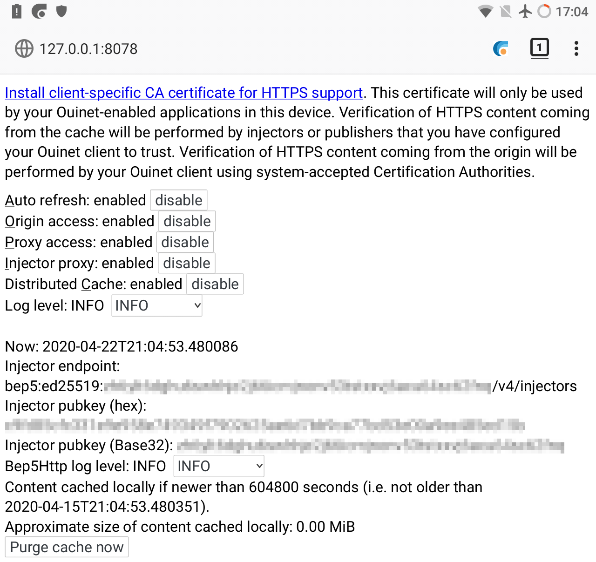

4. Annex: The Ouinet client front-end¶
The Ouinet client (as run by e.g. the CENO Browser) offers a front-end page with some information and actions which may be useful for debugging the client. Some of those may not be available from the CENO Extension.
The front-end is accessible using any plain Web browser running on the same device (you can use CENO too). Its default address is http://127.0.0.1:8078/. If you open it, you will see something like the figure below.

The items shown in the page include:
A link to enable the client as a certificate authority (CA) at your browser, since the client needs to intercept HTTPS traffic.
You only need this to use a plain browser for testing the Ouinet client, in which case you will also have to configure its HTTP/HTTPS proxies to
127.0.0.1:8077, and manually enable the CENO Extension for injection to work. We very strongly recommend using a separate, specific browser profile for this purpose.Please note that none of this needs to be done for the CENO Browser, since it is already configured like that.
Buttons to enable or disable the different mechanisms used by the client to access content. They are equivalent to the check boxes in the CENO Settings page.
Selectors to choose different log levels, like the default
INFO(informational messages, warnings and errors) orDEBUG(verbose output useful for reporting errors).The public key used to verify signatures from injectors, and the configured way to reach them. The default
bep5method looks up Internet addresses in a BitTorrent injector swarm, as explained here.Information on your local cache like the maximum accepted age of cached content, the approximate size of the cache, and a button to purge it completely.